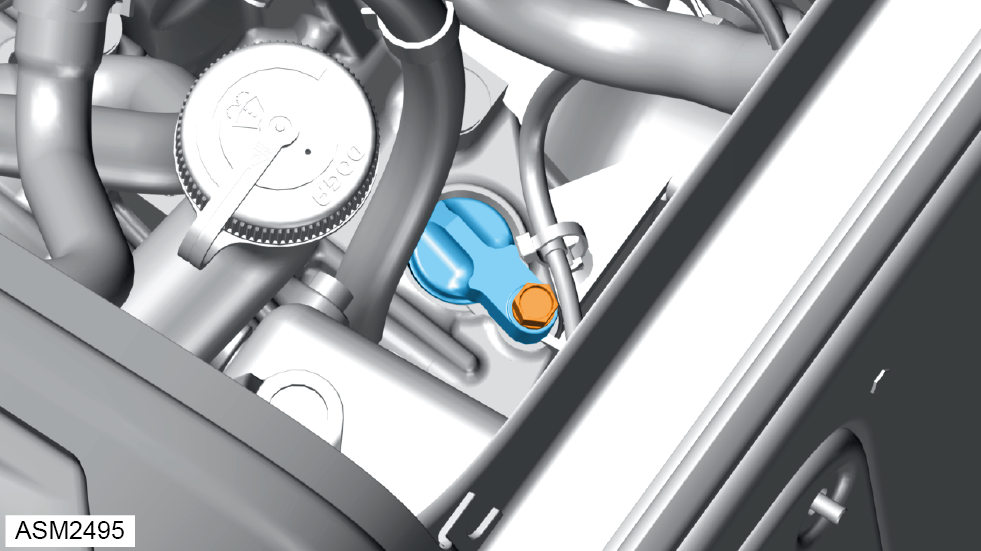

Transmission Oil Check Level - Auto - V6
Print
Operation Code: 47.02.11-00
Important Information
 WARNING: Transmission oil is a toxic substance and can be lethal if ingested. Wear protective gloves, protective clothing and safety glasses.
WARNING: Transmission oil is a toxic substance and can be lethal if ingested. Wear protective gloves, protective clothing and safety glasses.
Check
- Start engine.
NOTE: Make sure that electrical systems such as air conditioning system, audio system and lighting system are off and let engine coolant temperature rise to normal running temperature.
- Using selector, slowly select P R N D buttons, allowing transmission enough time to select each gear, then move selector back to ‘P’ - Park.
NOTE: Slowly selecting PRND will allow enough time for the fluid to circulate through each part of the transaxle.
- Select either ‘P’ - Park or ‘N’ – Neutral.
- Press and hold ‘P’ – Park button for 15 seconds. Engine coolant temperature display will change to automatic transmission fluid temperature display.
NOTE: Although display will change, the temperature value will not be shown until transmission fluid temperature rises to over 40°C.
- Allow temperature within transmission to rise to 70ºC + so that thermostat opens allowing transmission fluid to circulate around oil cooler system.
NOTE: A fluid temperature reading of 70ºC and over is required for the thermostat to open. To raise the fluid temperature it may be necessary to drive the vehicle for a distance of at least 10 miles (16 Km).
- Once thermostat has opened and transmission fluid has completely circulated around the external cooling system, stop engine and allow fluid temperature to drop to 40°C before checking the fluid level.
- Remove rear undertray. Refer to procedure.
- Position a suitable container under overflow plug.
- Using a 6 mm hexagon drive socket, remove overflow plug.
WARNING: Hot transmission oil may drain out.
- If transmission oil did not flow out of level/overflow plug hole, top up transmission oil.
Top Up
- Remove engine bay trim cover rear. Refer to procedure.

- Remove bolt securing speedometer blanking plug to transmission.
- Remove speedometer plug and discard O-ring.
- Using a suitable funnel, fill transmission with oil through speedometer drive hole until it begins to flow out of overflow plug hole and wait for it to slow down to a drip.
- Install overflow plug. Torque 40 Nm.
- Start engine and leave to idle for 1 minute to allow transmission oil to circulate around transmission.
- Remove level/overflow plug whilst engine is running and discard gasket. If transmission oil flows out wait for it to slow down to a drip.
- If transmission oil did not flow out, add transmission oil until it flows out of level/overflow plug hole.
- Install level/overflow plug and new gasket. Torque 40 Nm.
- Install speedometer blanking plug and new O-ring.
- Install rear undertray.
- Install bolt securing speedometer blanking plug to transmission. Torque 5.5 Nm.
- Install engine bay trim cover rear.